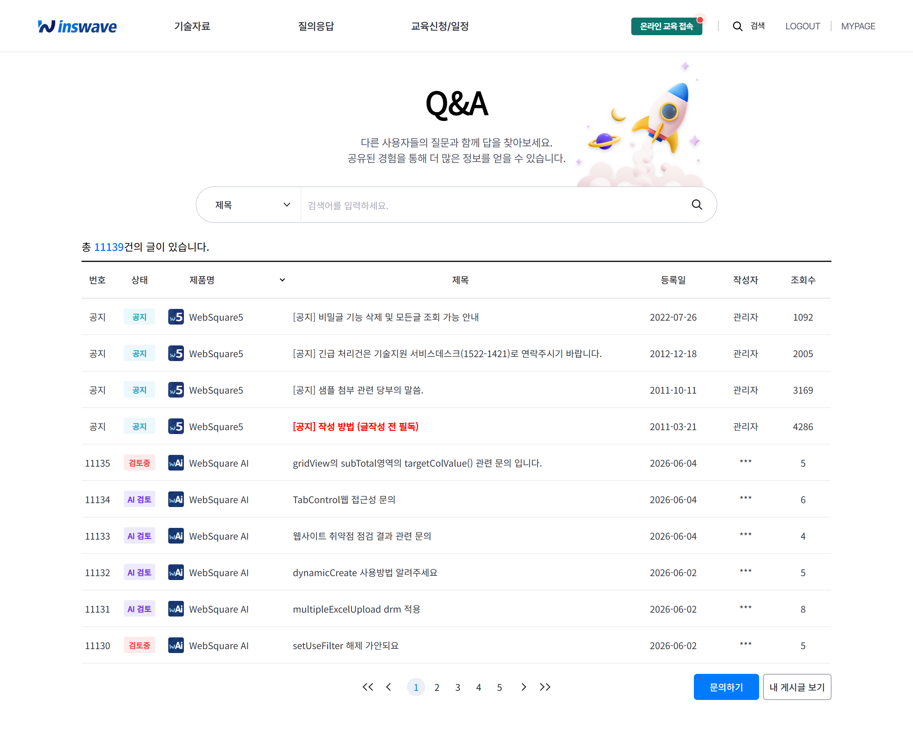
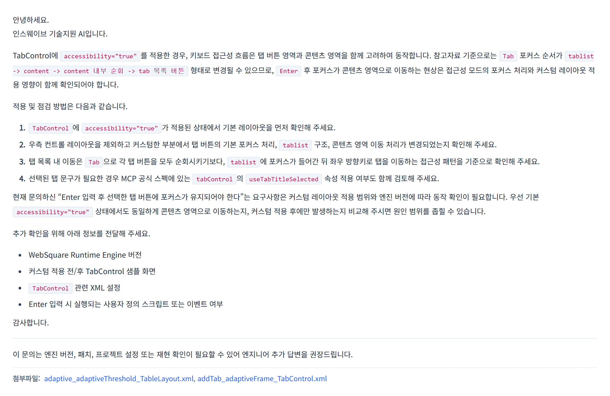
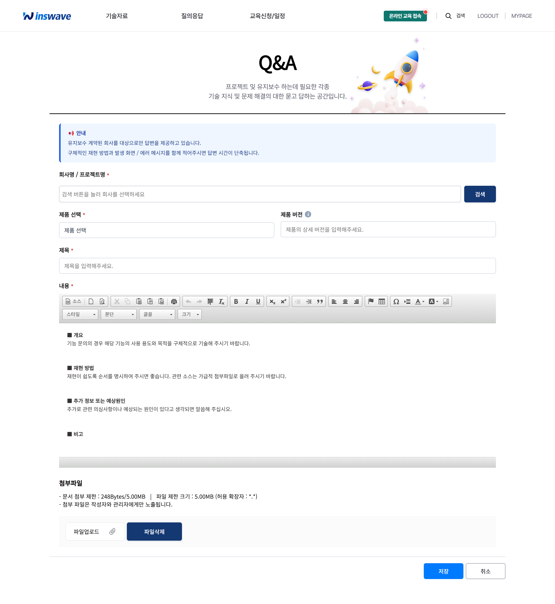

안녕하세요. 인스웨이브 기술지원팀입니다.
평소 WebSquare 기술지원 게시판을 이용해 주시는 고객 여러분께 감사드립니다. 고객님의 기술문의에 더 빠르고, 더 근거 있는 답변을 드리기 위해 기술지원 게시판을 AI 자동 답변 서비스와 함께 새롭게 리뉴얼하였습니다. 주요 내용을 안내드립니다.
그동안 기술지원 게시판은 문의 접수 후 담당 엔지니어가 사례를 확인하고 답변을 작성하는 방식으로 운영되어, 문의 시점에 따라 답변까지 시간이 걸리는 경우가 있었습니다.
이번 리뉴얼에서는 그동안 축적된 방대한 기술지원 데이터(기술문의·개발가이드·공식 문서 등)를 검색·분석하여, 문의 등록 후 수 분 내에 AI가 답변 초안을 자동으로 제공합니다. 고객님은 대기 시간을 줄여 우선 확인이 가능하며, 담당 엔지니어의 검토 답변도 기존과 동일하게 제공됩니다.
문의를 등록하시면, 유사한 과거 사례와 공식 가이드를 바탕으로 AI가 답변 초안을 자동 작성합니다. 원인 분석 → 해결 방법 → 확인 사항 순으로 정리되어, 바로 적용해 보실 수 있습니다.
AI 답변에는 작성에 활용된 유사 사례와 출처가 함께 표기됩니다. 답변이 어떤 근거에서 나왔는지 직접 확인하실 수 있어, 신뢰도 높게 활용하실 수 있습니다.
문의에 .xml, .js, .html 등 소스 파일을 첨부하시면,
AI가 해당 소스를 함께 분석하여 고객님의 화면 구조에 맞춘 더 구체적인 답변을 제공합니다.
관련된 WebSquare 공식 예제가 있는 경우, 답변과 함께 샘플 파일을 바로 내려받기 하실 수 있습니다. 검증된 예제를 참고하여 빠르게 적용하실 수 있습니다.
AI 답변을 확인하신 뒤 추가로 궁금한 점이 있으면, 이어서 질문을 남기실 수 있습니다. 앞선 문의 맥락을 유지한 채 후속 답변을 받아보실 수 있습니다.



AI는 문의에 담긴 정보를 바탕으로 답변하므로, 아래 정보를 함께 적어 주시면 답변 품질이 크게 향상됩니다.
Ctrl + 마우스 우클릭 → 디버그 메뉴 → "Version 정보"Q. AI 답변만으로 처리가 끝나나요?
A. 아닙니다. AI 답변은 빠른 우선 확인을 위한 초안이며, 필요한 경우 담당 엔지니어의 검토 답변이 추가로 제공됩니다.
Q. 소스를 첨부하면 보안상 안전한가요?
A. 첨부 소스는 답변 분석 용도로만 활용되며, 고객 정보(이름·메일·회사명 등)는 답변에 노출되지 않도록 처리됩니다.
Q. 답변이 정확하지 않은 것 같아요.
A. 이어서 질문하기로 추가 정보를 전달해 주시거나, 엔지니어 검토 답변을 기다려 주세요. 의견은 언제든 환영합니다.